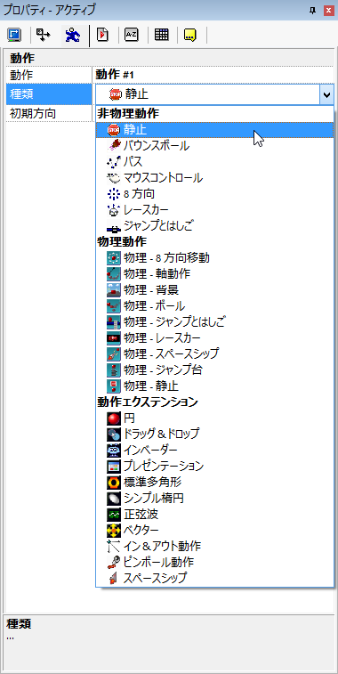

改訂: 1.1、 August 2008
CF 2.5 において、動作は、目に見えるオブジェクトの多くに備わっているプロパティであり、最もわかりやすいのはアクティブオブジェクトでしょう。 その名が示す通り、あるオブジェクトに与えられた動作は、そのオブジェクトが画面上でどのように動き、コントロールされるかを決定します。 予め用意された動作を利用することにより、あなたは自分で一から動作エンジンをプログラムする必要なく、複雑な効果を作成することができます。 必要に応じて、動作のプロパティを変更することも可能です。 多くの場合、これはデザインタイム (ゲーム/アプリの作成中) で、オブジェクトのプロパティの値を変更することで実現しますが、イベントエディタを使ってランタイム (ゲーム/アプリの実行中) で設定を変更したい場合もあるでしょう。 CF 2.5 には数多くの共通動作が用意されていますが、追加の動作を使用することも可能です。
CF 2.5 には多くの新機能が追加され、追加エクステンションを使用するのと似たような感じで追加動作を使用することができます。 これらの動作は CF 2.5 SDK と C++ のプログラミング知識、適切なコンパイラがあれば誰でも開発することができます。
初期の Clickteam 製品では、 Clickteam が開発した次の 7 つの動作が利用できました: 静止、バウンスボール、パス、マウスコントロール、8 方向、レースカー、ジャンプとはしご。 これらの動作は CF 2.5 のヘルプファイルでも説明され、製品に組み込まれていますが、追加の動作とは少し異なる部分があります。 CF 2.5 の新しいプラグインスタイルの動作について、そのコンセプトを紹介する目的で、ピンボール動作 という動作が用意されています。 ピンボール動作のソースコードは、動作 SDK でその内容を確認することが可能です。
CF2.5 でのもう 1 つの新機能は、 1 つのオブジェクトで複数の異なる動作が利用可能になったことで、イベントエディタを利用することでランタイム時にそれらを切り替えることができます。 初期の Clickteam 製品では、各オブジェクトに 1 つの動作しか割り当てることができませんでした。 したがって、例えば、ジャンプとはしご動作からパス動作に切り替えたい、というような場合には、 2 つのオブジェクトを作成する必要があり、少々面倒でした。 ほとんどの場合は 1 つの動作で十分だと思いますが、必要であれば複数の動作は切り替えて使用できることを覚えておいてください。
ほとんどの場合、追加動作の開発者はインストーラ形式でファイルを配布していますので、インストールで迷うことはないはずです。 ただしそうでないケースでは、次のルールに従ってインストールしてください。 動作を含むファイル (.mvx) は、 CF 2.5 がインストールされているフォルダー内の /Extensions および /Data/Runtime フォルダーにコピーする必要があります。 ファイルをコピーする前にCF 2.5 のすべてのインスタンスは終了しておいてください。
動作のインストールを終えたら、 CF 2.5 を起動し、新規プロジェクトを作成します。 フレームエディタでアクティブオブジェクトをを追加し、オブジェクトのプロパティで動作タブ (人が走っているアイコン) をクリックします。 種類のプロパティをクリックすると、現在インストールされている動作が図 1 のように一覧表示されます。

図 1: インストールされている動作の一覧です。 この図とお使いの CF 2.5 が異なる場合もあります。
リストからいずれかの動作を選択すると、その動作についてのプロパティが表示されますので、必要に応じて設定を変更してください。 個々のプロパティに関する詳細は、動作のドキュメントをご確認ください。
個々の追加動作に関するドキュメントを表示するには下記のリンクをクリックしてください:
残念ながら、現時点では、動作をイベントエディタのメニューで直接操作し、動作に関連するオプションを表示することはできません。 しかしながら、動作や動作セットに特別なコントローラーエクステンションパッケージが用意されている場合には、解決策はあります。 このエクステンションをフレームに追加すれば、動作のプロパティを抽出し、エクステンションのインターフェイスからランタイム時に変更することが可能です。
個々の動作コントローラー エクステンションに関するドキュメントを表示するには下記のリンクをクリックしてください:
CF 2.5 SDK には、動作 SDK とピンボール動作のコードおよびガイド (英語) が含まれています。 オリジナルの動作を作成する際の参考にしてください。